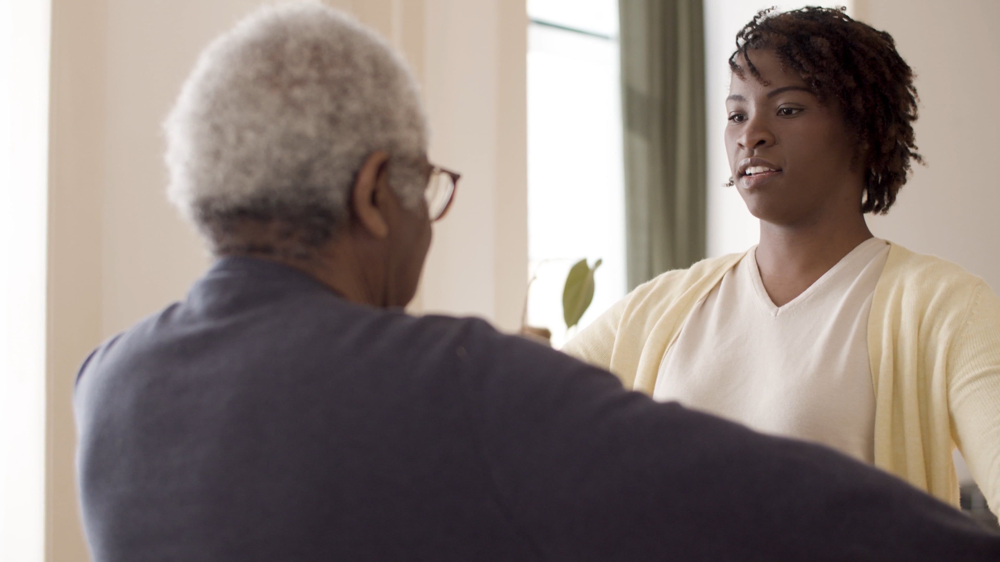
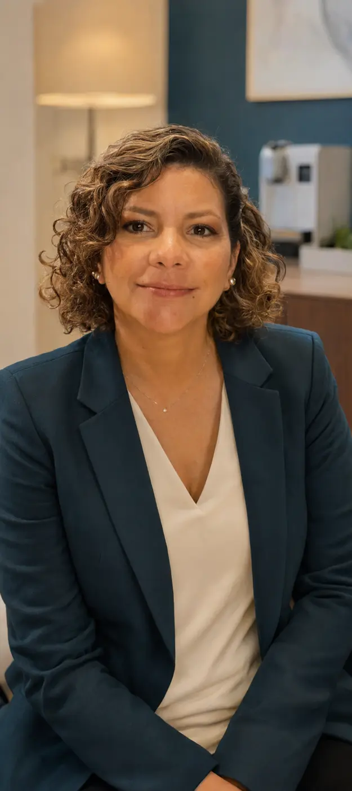

Escuchar y comprender
Historia, síntomas, limitaciones y actividades que deseas recuperar.
✦Consulta privada
Evaluación médica especializada para establecer un diagnóstico y definir un plan de rehabilitación personalizado.
Valoración médicaFunción y objetivos
Estudios especializadosElectrodiagnóstico
SeguimientoPlan y evolución
Ana María Granados LópezMédica especialista
Valoración médicaFunción y objetivos
Estudios especializadosElectrodiagnóstico
SeguimientoPlan y evolución
◉ Trayectoria profesional
Experiencia clínica desarrollada en diferentes instituciones de salud.
◉ Servicios
Cada servicio parte de una pregunta clínica y se integra con la historia, el examen y los objetivos funcionales.

◉ Evaluación funcional
Entender cómo una condición afecta la vida diaria permite orientar una ruta de manejo pertinente.
✦ Motivos de consulta
Problemas que afectan el movimiento, la función o la autonomía pueden requerir una valoración médica especializada.
◉ Así será tu atención
Cada consulta parte de tu situación, define qué estudiar y organiza los siguientes pasos.
Historia, síntomas, limitaciones y actividades que deseas recuperar.
Examen clínico y estudios especializados cuando sean necesarios.
Objetivos, indicaciones y seguimiento ajustados a tu evolución.

Perfil profesionalAna María Granados López
✓ Dirección médica
Ana integra valoración clínica, estudios electrodiagnósticos y orientación de rehabilitación para ayudar a definir decisiones comprensibles y objetivos funcionales concretos.
Valoración integralHistoria, examen y contexto funcional.
Razonamiento electrodiagnósticoHallazgos interpretados en su contexto clínico.
Plan orientado por objetivosPrioridades, conducta y criterios de seguimiento.
Información profesional en actualizaciónFormación, experiencia institucional y credenciales se publicarán después de ser confirmadas por Ana.
□ Tu consulta
El calendario y el checkout ya están representados en el frontend; la conexión real se activará con las cuentas de Ana.
Solicita citaElige servicio y horario.
Confirma modalidadVirtual o presencial.
Recibe valoraciónCon ruta de manejo.
🔒 La reserva definitiva se confirmará después de validar el pago mediante Wompi.
Cuando el dolor, una lesión, una condición neurológica o una limitación física afectan el movimiento, la autonomía o la calidad de vida.
Sí. Algunos motivos de consulta y seguimientos pueden atenderse por videollamada. Antes de confirmar se valida si la modalidad virtual es apropiada.
No. Electromiografía, neuroconducción y potenciales evocados requieren atención presencial y equipos especializados.
Ten disponibles estudios previos, fórmulas, lista de medicamentos y un resumen de los síntomas. La información sensible se solicitará por canales seguros.
Sí. La valoración busca orientar su indicación y adaptación funcional según las necesidades individuales.
Cuando Ana confirme la tarifa y tengamos las credenciales comerciales, este paso generará una referencia única, enviará al checkout y confirmará el pago antes de liberar la cita.